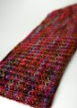

|
||
Premium Patterns Wintry Mix Mitts Love Bytes HawkeyeFree Patterns Kiddie Cadet Summerlin Ruffled Scarf Seamless DS Sock Simply Seamless Pouch Myriads of MushroomsExtras DIY Mitten Blocker Felt Patch Tutorial Yarn Dyeing Tutorial Needle Pouches Knitting Journal |
August 26, 2008 - Posted by Alice SchneblyBainbridge ScarfProject Specs Well, I eked this one out right under the wire. All the knitting was finished on this cowl quite a few days ago, but I put off sewing on the button until just before the end of the Olympics on Sunday morning. I’ve got one more finished Ravelympics project to show later this week (right now it’s drying), but that’s the extent of my completed Olympic knits. I definitely came up short of my goal of ten finished items, but I’m happy with the ones I did complete—plus I almost finished two of the big projects I had planned and I’m excited to work on those more this week. This cowl really was a super fast and easy knit. For such a simple pattern, the finished product turns out pretty stylish. Because I’m a tight knitter, I casted on 160 stitches rather than 144 and went up to a size US6 needle. The scarf ended up right on the original measurements in the pattern after blocking. Instead of using ties I opted for a simple loop and button closure (inspired by this one) for a cleaner look. Unfortunately, I’m not keeping this cowl for myself (yay, another x-mas gift finished!) but it will be easy to make myself one so I’m not too sad to see it go . Plus, I’m really excited to be checking things off my holiday to-do list this early in the year!  I chose to work Manos Silk Blend that I picked up at The Dancing Ewe during a recent trip to visit family in Ellensburg, Washington. The yarn is so pretty in person I couldn’t resist buying some. I love the colors throughout and the dye job is flawless. I also bought a few skeins in the Wildflowers colorway to knit up something for myself in the future. Working with this yarn is very similar to knitting with Malabrigo Silky Merino. It has a nice consistent thickness and a great sheen to it. There are some differences though where I think Manos Silk Blend falls short when comparing it to Silky Merino. Manos Silk Blend is a 70% wool, 30% silk blend, while the Malabrigo is a 50/50 blend. At first I didn’t think I could tell the difference in the softness, but after comparing this cowl side by side with my Step Ribbed Stole I really prefer the silkiness of the Malabrigo. Although both yarns have the same yardage per skein, a hank of Manos costs about three dollars more. I’m glad I tried this yarn out, but in the future I think I’ll stick to Malabrigo Silky Merino if I’m looking for a nice DK weight yarn—that is unless there is a certain colorway I can only get in the Manos Silk Blend. I’m excited to finally have jumped on the cowl bandwagon, though I’m not sure if this is actually a cowl or more of a neckwarmer. Now I’m looking forward to making a cowl for myself and I think this is the perfect one for me. After reading the pattern over I am a bit scared though. I’ve never done double knitting before and it sounds tricky! At least I have quite a few months to conquer that fear before the weather gets chilly here in Las Vegas! P.S – I started my Camdyn 365 project today! |
   Recent ReviewsRecent Posts
 Our Favorites
|
| © 2007 KathrynIvy.com | ||
{kind=link}
{kind=link}